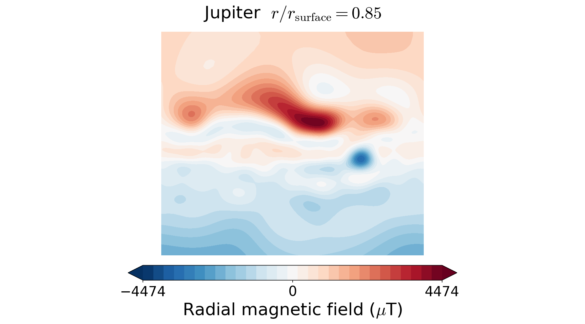
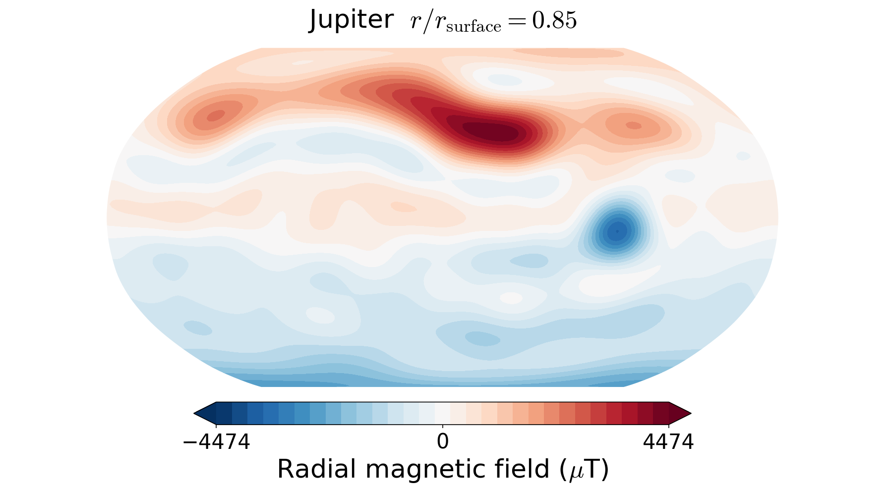
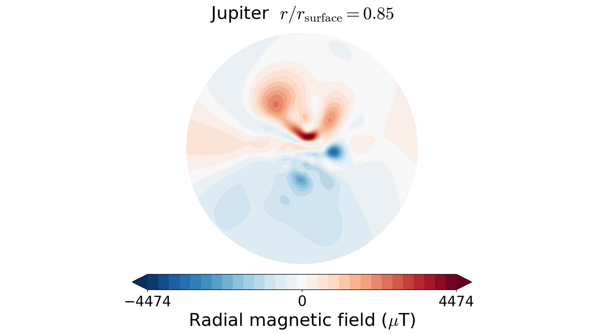
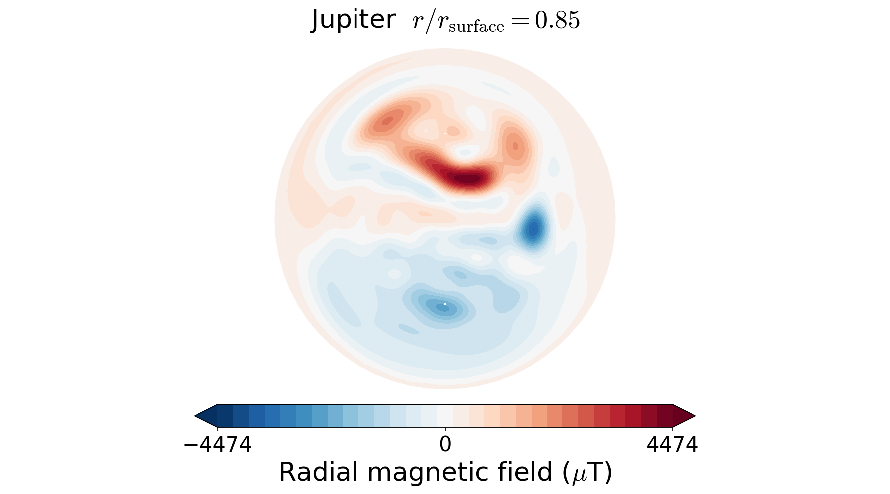

5. Map projections#
By default, the plot function tries to use the Mollweide projection. However, using the power of the cartopy library, any projection from this list is supported. In the absence of the cartopy library, the 2D plots fall back to the internally written Hammer projection. Examples of Jupiter’s radial magnetic field at r=0.85 with different projections are shown below:
In [1]: from planetmagfields import *
In [2]: p = Planet(name='jupiter',model='jrm09')
Planet: Jupiter
l_max = 10
Dipole tilt (degrees) = 10.307870
In [3]: p.plot(r=0.85)
In [4]: projlist=['Mercator','Robinson','Stereographic','AzimuthalEquidistant']
In [5]: for k,proj in enumerate(projlist):
...: p.plot(r=0.85,proj=proj)
...: savefig('jup_r0_85'+proj+'.png',dpi=150,bbox_inches='tight')
...: close()
In[3] produces the plot of Jupiter’s field already shown above. In[5] produces the following figures with the Mercator, Robinson, Stereographic and azimuthal equidistant projections, respectively.
{kind=link}

{kind=link}

{kind=link}

{kind=link}

This also works with the magField.py script for quick plotting. Examples:
./magField.py -p earth -r 0.9 -m Robinson
or even with plots of all planets together
./magField.py -p all -r 0.9 -m Robinson
Note that the projection information is kept out of the plot titles to prevent too much text.
❗ | The Orthographic projection often does not create correct plots, be cautious while using it.